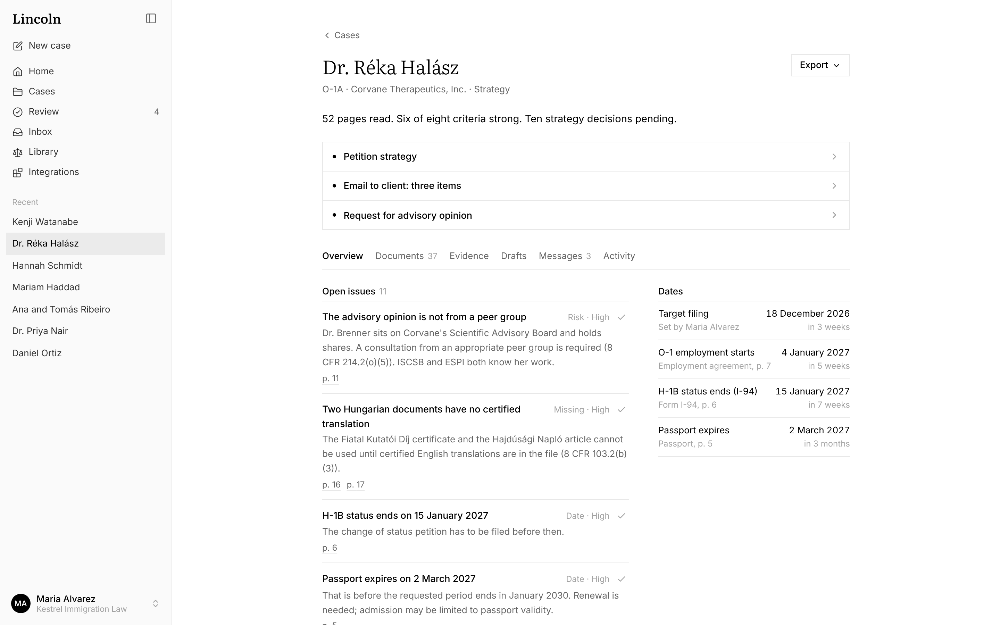

Lincoln
Immigration cases, worked before anyone asks.
Pre-seed · Prepared for 1517 Fund · November 2026 · Confidential
Founder
Ismael Kirmi. 15, in school in Dublin. Built all of Lincoln himself.
13
A game the whole school played
Built a multiplayer mobile game to play with friends. It spread until nearly every student at his school played it daily.
14
Hopkins
An AI content app for estate agents in Ireland and the UK, grown through its own Instagram audience. Dropped it for a bigger problem.
15
Lincoln
The case engine, Gmail and Outlook, Word and Outlook add-ins, encrypted storage and USCIS form filling, designed and built alone.
The problem
Every immigration case is the same three jobs, done by hand.
Read every document and check every name and date against every other. Chase the client for what is missing. Draft letters and filings that cite the evidence page by page. A missed date can cost a client their status.
11.3M
cases pending at USCIS in early 2025, the most in at least a decade.
16,000+
attorneys in AILA, the US immigration bar, each with paralegals and staff.
$29.70
an hour, the median paralegal wage in legal services. Attorney time costs more.
Sources: USCIS quarterly data as reported by the American Immigration Council (Q2 FY2025); AILA 2026 media kit; US Bureau of Labor Statistics, paralegals in legal services.
What firms use today
Today's software waits to be asked.
Case management
Docketwise, INSZoom, LollyLaw. They store the file and fill forms. A person still reads every page, chases the client and drafts the letters.
AI assistants
Harvey, Legora, ChatGPT. They answer when prompted. A person still has to notice the work, upload the file and ask the right question.
Lincoln starts when the email arrives.
How it works
From the inbox to a decision, without anyone starting it.
01
Reads the mail
Every email and intake form is matched to the right client and case, or opens a new one.
02
Reads the file
Every page, scans and phone photos included. Each fact is tied to the page it came from.
03
Does the work
Deadlines, missing items, client emails, letters, evidence maps and USCIS forms, drafted.
04
Asks for a decision
The attorney approves, edits or returns it. Nothing leaves the firm without approval.
The product
The attorney reads it once and sends it.
Lincoln read the client's file, found three gaps and wrote to her about them, in the attorney's voice.
Sample workspace. Every client and case shown is made up.

The product
Every case, already worked.
Open issues with the page they came from, deadlines, and what is waiting for a decision. On a computer or a phone.
Sample workspace. Every client and case shown is made up.


Where it stands
Tested against USCIS's own decisions.
90%
of the findings USCIS itself made, on ten real appeal decisions across ten case types (40.5 of 45 points), with no serious error in any of them.
Ten cases, and the fixes that raised the score from 77% were written from them. A fresh set of real cases is next.
- Built: mail from Gmail and Outlook, cases opened and matched by themselves
- Built: files of any length read, issues and deadlines found, page by page
- Built: drafts with citations, USCIS forms filled, Word and Outlook add-ins
- Built: each firm's files encrypted with its own key
- Not yet: revenue. Every test so far used public documents and made up cases.
Business model
Priced per firm by caseload, against the hours it saves.
$1,500
a month, under 10 new cases a month
$13,000
a month, 101 to 200
Unlimited users. The AI cost of a long case in testing was $1.37. Prices are a starting guide, to be tested with the first firms. Immigration is the first market; the same engine fits any practice that runs on documents, clients and government deadlines.
The round
Raising $250k to reach $10k to $20k a month.
| A part time seller to bring in firms | $60k |
| A part time immigration attorney reviewing Lincoln's work | $36k |
| Penetration test, insurance, customer and data contracts | $31k |
| AILA conference and content, so firms find Lincoln | $25k |
| AI models and hosting | $18k |
| Travel to meet firms, company and accounting | $15k |
| Buffer, about three months | $65k |
| Twelve months, plus buffer | $250k |
Months 1 to 3
Company formed, zero retention agreements with the AI providers, penetration test passed, first three firms on real cases.
Months 4 to 6
Seller in place. First paying firms.
Months 7 to 12
Five to eight paying firms: $10k to $20k a month.
Estimates. $15k a month is, for example, three firms at $1,500 and three at $3,500.
Every case worked.
Every decision the attorney's.
Ismael Kirmi · uselincoln.com